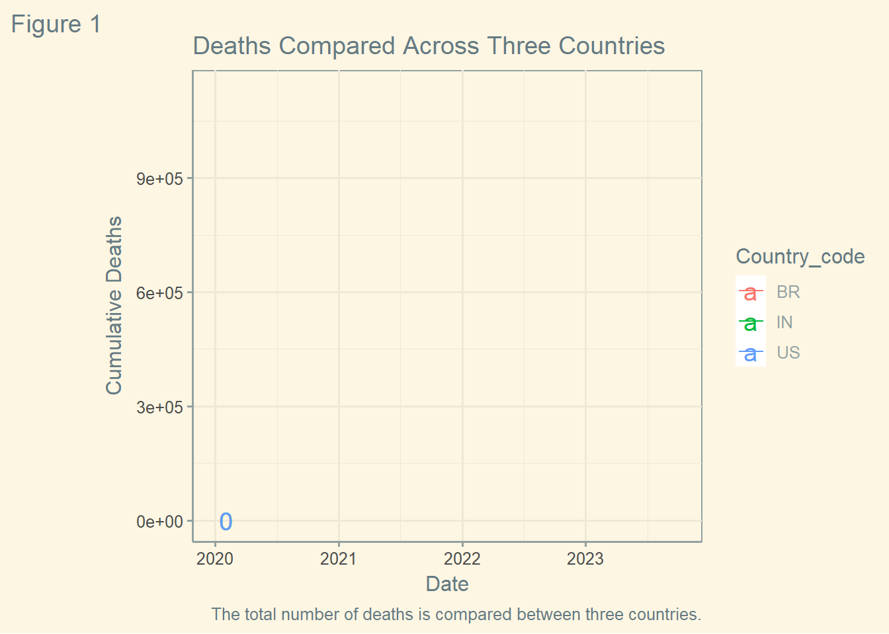

Open the Rmarkdown file of this assignment (link) in Rstudio.
Right under each question, insert a code chunk (you can use the hotkey Ctrl + Alt + I to add a code chunk) and code the solution for the question.
Knit the rmarkdown file (hotkey: Ctrl + Alt + K) to export an html.
Publish the html file to your Githiub Page.
Submission: Submit the link on Github of the assignment to Canvas
Notice:In this assignment, all the plot should have title, caption, and axis labels.
Use the dataset by of covid 19 by WHO at https://covid19.who.int/WHO-COVID-19-global-data.csv. Find the three countries with the most numbers of deaths by Covid-19.
#Importing the library and data. The data is saved to a dataframe.library(tidyverse)df <-read_csv('https://covid19.who.int/WHO-COVID-19-global-data.csv')head(df)
# A tibble: 6 × 8
Date_reported Country_code Country WHO_region New_cases Cumulative_cases
<date> <chr> <chr> <chr> <dbl> <dbl>
1 2020-01-03 AF Afghanistan EMRO 0 0
2 2020-01-04 AF Afghanistan EMRO 0 0
3 2020-01-05 AF Afghanistan EMRO 0 0
4 2020-01-06 AF Afghanistan EMRO 0 0
5 2020-01-07 AF Afghanistan EMRO 0 0
6 2020-01-08 AF Afghanistan EMRO 0 0
# ℹ 2 more variables: New_deaths <dbl>, Cumulative_deaths <dbl>
Hint:
Use filter to select the most current date
Pipe with arrange(-Cumulative_deaths) to rank the data by the number of cumulative deaths
#Using filter to list only the data from the final date of observation. Arrange was then used to list the countries in descending order of `Cumulative_deaths`. The countries with the highest number of cumulative deaths are the U.S., Brazil, and India.df %>%filter(Date_reported ==max(Date_reported)) %>%arrange(-Cumulative_deaths) %>%head()
# A tibble: 6 × 8
Date_reported Country_code Country WHO_region New_cases Cumulative_cases
<date> <chr> <chr> <chr> <dbl> <dbl>
1 2023-10-04 US United State… AMRO 0 103436829
2 2023-10-04 BR Brazil AMRO 0 37721749
3 2023-10-04 IN India SEARO 0 44998838
4 2023-10-04 RU Russian Fede… EURO 0 23029404
5 2023-10-04 MX Mexico AMRO 0 7690908
6 2023-10-04 GB The United K… EURO 0 24743787
# ℹ 2 more variables: New_deaths <dbl>, Cumulative_deaths <dbl>
Use transition_reveal to make a plot revealing the number of deaths in the three countries with the most numbers of deaths
#Importing libraries then filtering by country. Although the variable `Country` was not used directly, `country code` is unique to each country and can be used in place of country in this instance.library(ggplot2)library(knitr)library(dplyr)library(gifski)library(gganimate)library(ggthemes)df %>%filter(Country_code =="US"| Country_code =="BR"| Country_code =="IN") %>%ggplot(aes(x=Date_reported,y=Cumulative_deaths,color=Country_code))+geom_line()+geom_text(aes(label = Cumulative_deaths),hjust =-.1, size=5)+theme_solarized()+labs(title ="Deaths Compared Across Three Countries",caption ="The total number of deaths is compared between three countries.",tag ="Figure 1",x ="Date",y ="Cumulative Deaths", )+transition_reveal(Date_reported)

Create the new variable (column) death_per_cases recording the number of deaths per cases (Hint: divide cumulative deaths by cumulative cases). What are the three countries with the highest deaths per cases?
Ans: The three countries are Yemen Sudan and Syrian Arab Republic.
#Using the mutate function to add the column `death_per_cases` to the dataframe. The filter function was then used to filter by the last day of observations. Finally, the arrange function was used to list the countries by `death_per_cases` in descending order. The three countries are Yemen Sudan and Syrian Arab Republic.df <- df %>%mutate(death_per_cases = Cumulative_deaths/Cumulative_cases)df %>%filter(Date_reported ==max(Date_reported)) %>%arrange(-death_per_cases) %>%head()
# A tibble: 6 × 9
Date_reported Country_code Country WHO_region New_cases Cumulative_cases
<date> <chr> <chr> <chr> <dbl> <dbl>
1 2023-10-04 YE Yemen EMRO 0 11945
2 2023-10-04 SD Sudan EMRO 0 63993
3 2023-10-04 SY Syrian Arab … EMRO 0 57423
4 2023-10-04 SO Somalia EMRO 0 27334
5 2023-10-04 PE Peru AMRO 0 4520727
6 2023-10-04 EG Egypt EMRO 0 516023
# ℹ 3 more variables: New_deaths <dbl>, Cumulative_deaths <dbl>,
# death_per_cases <dbl>
Use transition_reveal to make a plot revealing the number of deaths per cases of the US, Italy and Mexico.
#Filtering by country and then using the transition_reveal function to plot the number of deaths per cases.df %>%filter(Country =="United States of America"| Country =="Italy"| Country =="Mexico") %>%ggplot(aes(x=Date_reported,y=death_per_cases, color = Country))+geom_point(size=3)+geom_text(aes(label = death_per_cases),hjust =-.1, size=5)+labs(title ="Deaths per Cases among Three Countries",caption ="The number of deaths per cases is compared between three countries.",tag ="Figure 2",x ="Date",y ="Deaths per Cases", )+theme_calc()+transition_reveal(Date_reported)
Import the following data https://raw.githubusercontent.com/owid/covid-19-data/master/public/data/vaccinations/vaccinations.csv
#Importing data and saving it to a dataframe.df <-read_csv("https://raw.githubusercontent.com/owid/covid-19-data/master/public/data/vaccinations/vaccinations.csv")head(df)
# A tibble: 6 × 16
location iso_code date total_vaccinations people_vaccinated
<chr> <chr> <date> <dbl> <dbl>
1 Afghanistan AFG 2021-02-22 0 0
2 Afghanistan AFG 2021-02-23 NA NA
3 Afghanistan AFG 2021-02-24 NA NA
4 Afghanistan AFG 2021-02-25 NA NA
5 Afghanistan AFG 2021-02-26 NA NA
6 Afghanistan AFG 2021-02-27 NA NA
# ℹ 11 more variables: people_fully_vaccinated <dbl>, total_boosters <dbl>,
# daily_vaccinations_raw <dbl>, daily_vaccinations <dbl>,
# total_vaccinations_per_hundred <dbl>, people_vaccinated_per_hundred <dbl>,
# people_fully_vaccinated_per_hundred <dbl>,
# total_boosters_per_hundred <dbl>, daily_vaccinations_per_million <dbl>,
# daily_people_vaccinated <dbl>, daily_people_vaccinated_per_hundred <dbl>
Use transition_reveal to plot the total vaccinations per hundred by level of income. Hint: the levels of income are identified in the location variable. Put a short comment on the caption of the plot.
#Viewing the levels of income within the variable `location`. The names function was applied to view only the names of the categories.df$location %>%table() %>%names()
#Filtering by income level within the column `location`. A line plot is then created to represent the total vaccinations per hundred by income level. The high income and upper middle income levels displayed very similar results. There does appear to be a correlation between income level and `total_vaccinations_per_hundred`.df %>%filter(location =="Upper middle income"| location =="Lower middle income"| location =="High income"| location =="Low income") %>%ggplot(aes(x=date,y=total_vaccinations_per_hundred,color=location))+geom_line()+geom_text(aes(label = total_vaccinations_per_hundred),hjust =-.1, size=5)+labs(title ="Vaccinations by Class",caption ="Total vaccinations per 100 people were compared by class.",tag ="Figure 3",x ="Date",y ="Total Vaccinations per 100", )+theme_fivethirtyeight()+transition_reveal(date)